MUSE: A Multi-agent Framework for Unconstrained Story Envisioning via Closed-Loop Cognitive Orchestration
W. Sun, Z. Wang, Z. Hu, C. Wang, H. Li, W. Chen.
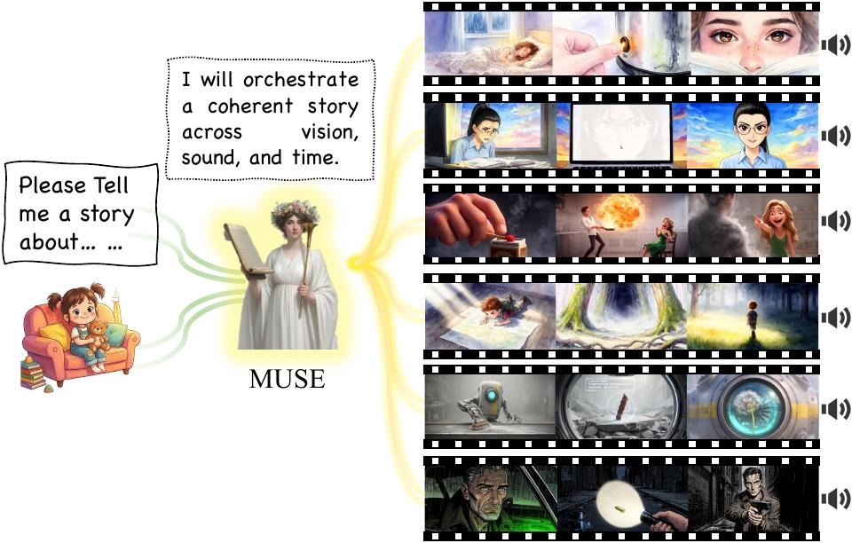
I am a postdoctoral researcher at Li Auto through a joint program with Tsinghua University. My research focuses on video generation, controllable generative models, and compact spatiotemporal representations.
I am particularly interested in advancing these capabilities toward interactive world models and Physical AI.
I received my Ph.D. from Beijing Institute of Technology, where I worked on 3D human modeling and neural reconstruction.
news
selected work
My recent work explores geometry-guided video editing, joint camera, object and weather control, compact video representations, and multimodal generation and evaluation.
W. Sun, Z. Wang, Z. Hu, C. Wang, H. Li, W. Chen.

Q. Zhang, C. Wu, W. Sun, H. Liu, et al.
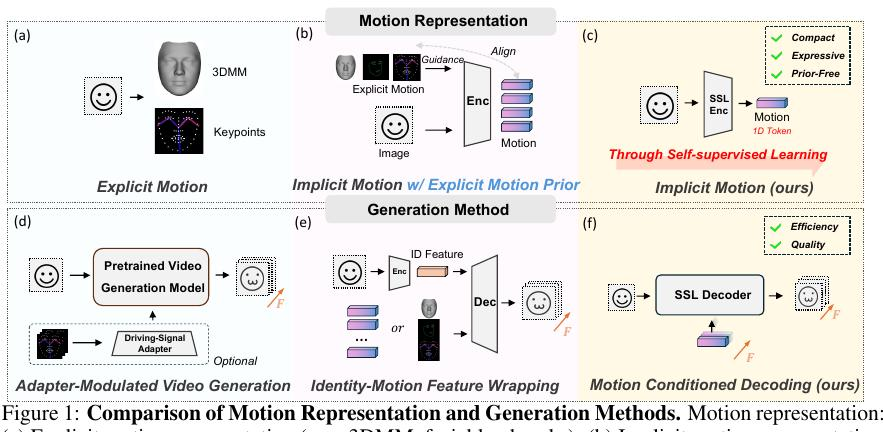
Xiangchen Yin, Wenzhang Sun, Jiahui Yuan, Zijie Liu, Yinda Chen, Wei Li, Dachun Kai, Chunfeng Wang, Xiaoyan Sun.
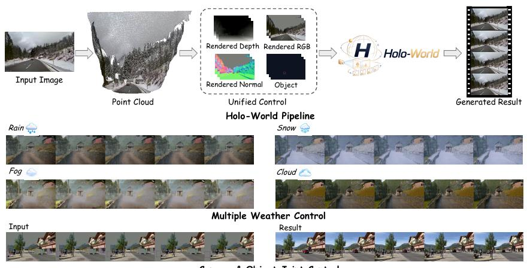
Z. Hu, Y. Zhao, Y. Peng, W. Sun, et al.
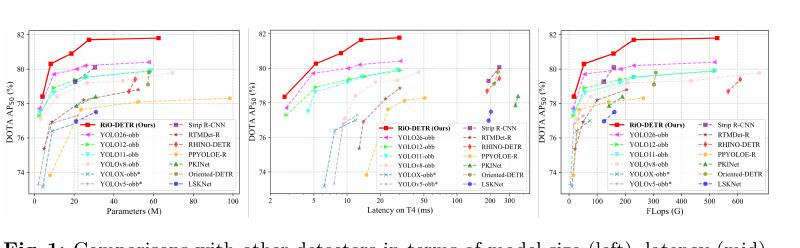
Yujia Chen, Rui Sun, Wangkai Li, Huayu Mai, Bingzhou Wang, Zhangyu He, Aibing Li, Wenzhang Sun, Tianzhu Zhang.
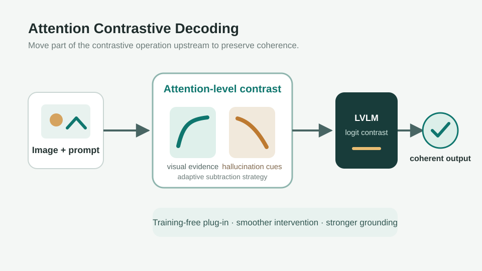
Yujia Chen, Rui Sun, Zhaoyang Li, Wangkai Li, Huayu Mai, Bingzhou Wang, Aibing Li, Wenzhang Sun.
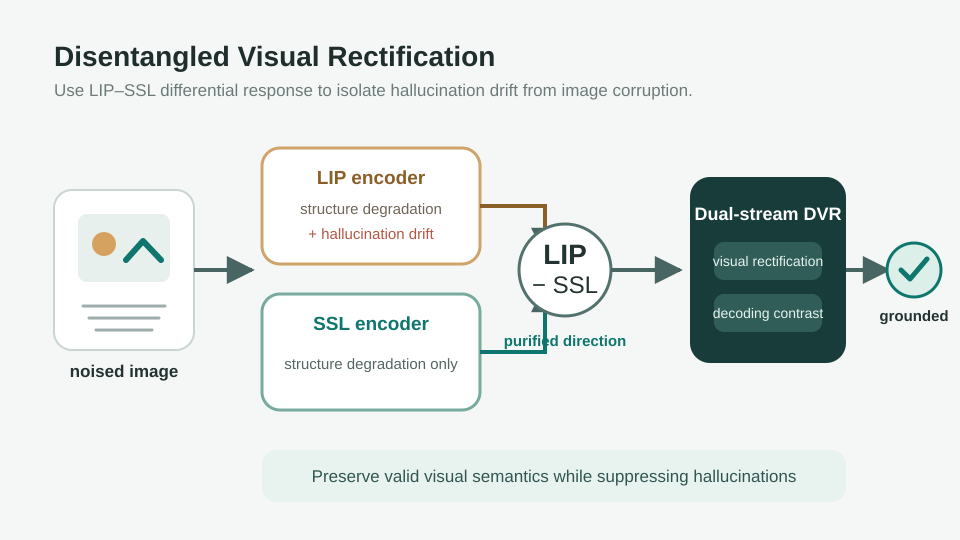
Zhangchi Hu, Wenzhang Sun, Xiangchen Yin, Jiahui Yuan, Chunfeng Wang, Hao Li, Kun Zhan, Xiaoyan Sun. Project Leader.
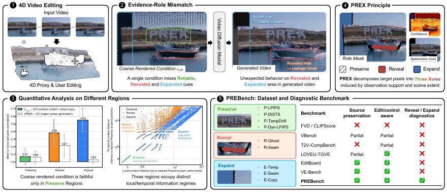
Wenzhang Sun, Chunfeng Wang, Xiangchen Yin, Yujia Chen, Hao Li, Kun Zhan.
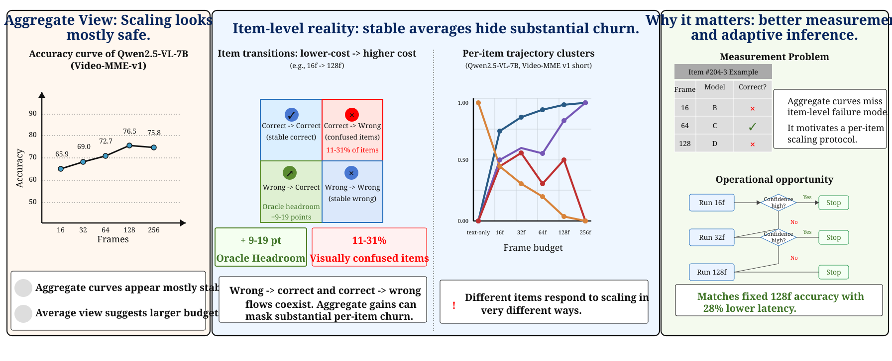
Q. Hou, W. Sun, C. Zeng, C. Wang, H. Li, J. Cui.
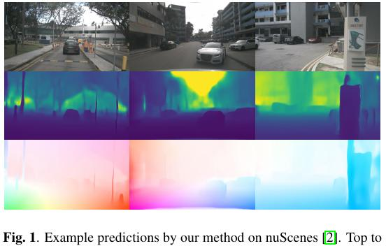
A. Ying, W. Sun, C. Zeng, C. Wang, H. Li, J. Cui.
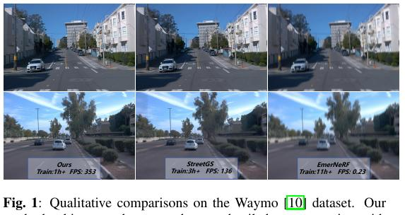
W. Sun, Q. Hou, D. Di, J. Yang, Y. Ma, J. Cui.
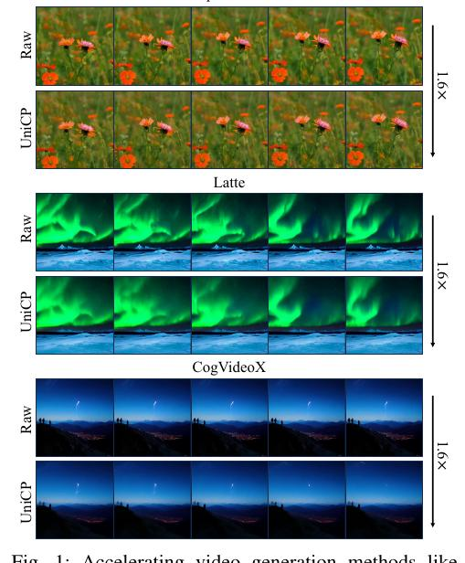
X. Yin, J. Yuan, Z. Hu, W. Sun, et al.
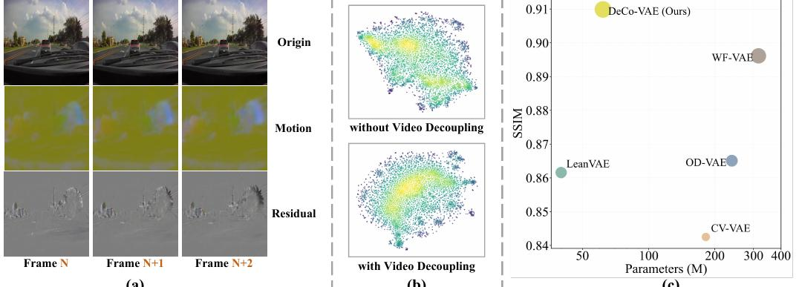
Jiahui Yang, Donglin Di, Baorui Ma, Jianxun Cui, Xun Yang, Yongjia Ma, Wenzhang Sun, Wei Chen, Zhou Xue, Meng Wang, Yebin Liu.
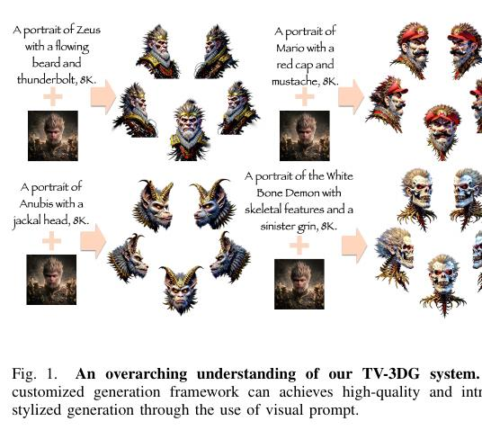
D. Di, H. Feng, W. Sun, Y. Ma, et al.
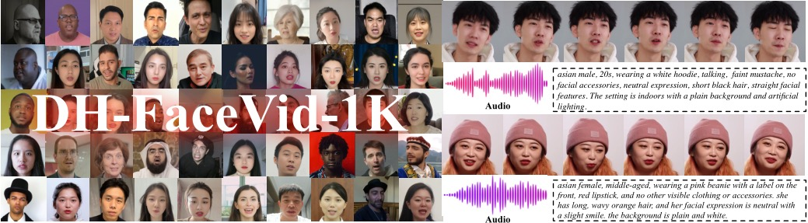
H. Liu*, W. Sun*, Q. Zhang, D. Di, et al.
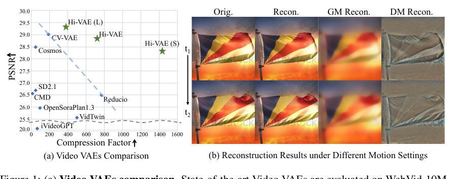
J. Wang*, W. Sun*, M. Li, Y. Zheng, et al.
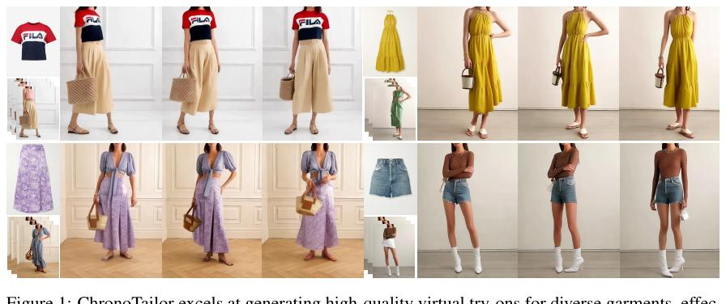
H. Liu, W. Sun, D. Di, S. Sun, J. Yang, C. Zou, H. Bao.
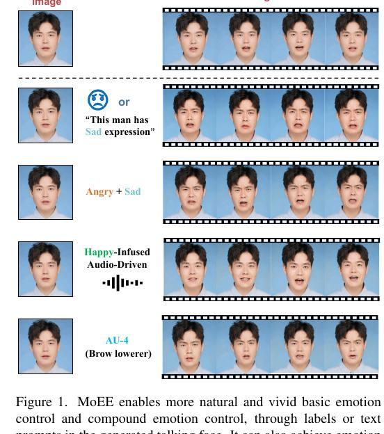
W. Sun, X. Li, D. Di, Z. Liang, Q. Zhang, H. Li, W. Chen, J. Cui.
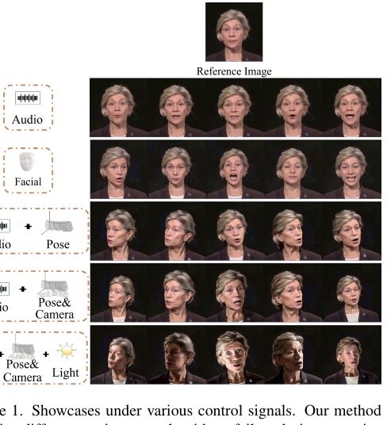
W. Sun, Y. Che, H. Huang, Y. Guo.
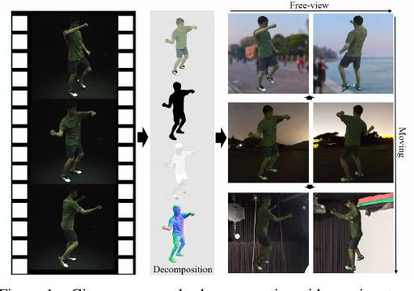
W. Sun, L. Wang, S. Ma, Q. Ma.
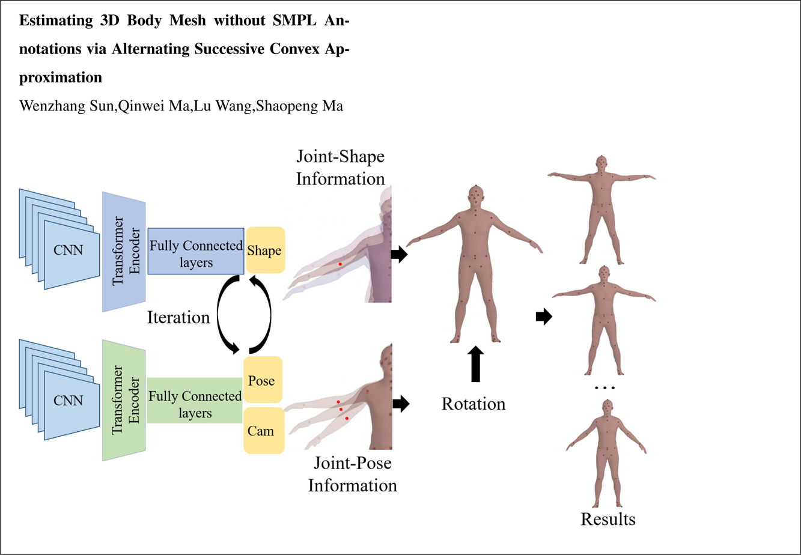
professional service
IEEE Transactions on Multimedia (TMM)